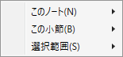

BMSモード
BMSファイル(.bms .bme .bml .pms .pme)を閲覧・編集するためのウィンドウです。
- BMSEに近い操作感の、より高機能なBMSエディターです。
-
ほぼ任意の分解能に対応しています。
- BmsMaker3では、読み込んだBMSのノート位置や小節長などの情報は全て分数形式で保持します。
- 移動の最小単位となる「分解能」は指定する必要があるものの、その分解能の値は事実上無制限となっています。
- 29分音符や7分音符と13分音符のポリリズムなどといったエキセントリックな配置も可能です。
- ほとんどのメタデータを、GUIを通して設定可能です。
-
BMS制作を補助する様々な機能が付属しています。
- 情報: キーごとのノート数や演奏時間を分析する
- 選択機能: ノートをまとめて選択したり一括で変更したりする
- キーの整列: ファイル名ごとに定義をグループ化し、グループごとにBMSレーンに整列する
- 連続配置: ぶつ切り音声などをその音声の長さに応じた間隔で自動配置できる
- スライス: 1つの.wav音声を複数の定義に分割し、その分割間隔に従って配置できる
- 定義の削減: 同じ内容の.wavファイルが複数あるかを検出し、それらの重複を取り除く
- 定義の整列: 未使用の定義の削除、定義リストの空欄の圧縮、定義基数の変更など
- 多重定義: 同じ音声が連続して鳴らされる場合に、定義を多重化することでノイズを防ぐ
- アセンブル: 「スライス」とは逆に、複数のノートを1つの.wav音声に統合し、必要に応じて置換を行う
説明
要素をクリックすると説明セクションに飛びます。
要素をクリックすると説明が表示されます。
譜面表示エリア
- 配置されているノートを視覚的に確認・編集するエリアです。
マウスによる操作
-
ホイール: スクロールと拡大率変更に使います。
- Shiftを押している場合は水平方向にスクロールします。
- Ctrlを押している場合は縦スケールを変更します。
- Ctrl+Shiftを押している場合は横スケールを変更します。
- ホイールボタンを押したままマウスを動かすと、その方向へ高速でスクロールします。
-
左クリック: 選択とノートの配置に使います。
-
挙動は編集モードによって異なります。
-
選択/移動モード
-
追加モード
-
-
音声ファイルの定義されたノートをクリックで選択または配置した際、「クリックで再生」が有効な場合は、その音声ファイルの波形をそのノートの上に表示します。
- 次のノートやロングノート終端の配置位置の参考にしてください。
-
挙動は編集モードによって異なります。
-
右クリック: スクロールとコンテキストメニューに使います。
- 右ドラッグによって縦横にスクロールします。
-
右クリックの後、マウスを動かさずにボタンを離すとコンテキストメニューが開きます。
 -
このノート: ノートを右クリックしてメニューを開いた場合に選択可能となる項目です。

- 1行目には、クリックされたノートの詳細が表示されます。
- 指揮者レーン以外のノートを右クリックした場合、そのノートの定義番号が対応する定義リストにて選択されます。
-
 編集: ノート編集ウィンドウを開きます。
編集: ノート編集ウィンドウを開きます。
-
 削除: このノートを削除します。
削除: このノートを削除します。
-
 スライス: このノートに定義されている音声ファイルを対象として、スライスウィンドウを開きます。
スライス: このノートに定義されている音声ファイルを対象として、スライスウィンドウを開きます。
- 小節線を追加: このノートの位置に小節線を追加し、この小節を2つに分割します。
-
この小節: 右クリックした小節に関するメニューです。
- 1行目には、クリックされた小節の番号が表示されます。
- 全て選択: この小節に含まれる全てのノートを選択状態にし、それ以外の選択状態を解除します。
-
編集: 小節長編集ウィンドウを開きます。
- 分割: 小節分割ウィンドウを開きます。
-
 挿入: この小節の直前に、長さ1の小節を挿入します。
挿入: この小節の直前に、長さ1の小節を挿入します。
-
 削除: この小節を削除し、以降にある全てのオブジェクトの位置を、この小節の長さぶん手前に移動します。
削除: この小節を削除し、以降にある全てのオブジェクトの位置を、この小節の長さぶん手前に移動します。
-
選択範囲: 選択範囲に関するメニューです。
- 全て選択: この譜面に含まれる全てのノートを選択状態にします。
- 選択機能: 選択機能ウィンドウを開きます。
-
 左右反転: 選択範囲に含まれる音声レーン(演奏レーン+BGMレーン)のノートの配置を左右反転します。
左右反転: 選択範囲に含まれる音声レーン(演奏レーン+BGMレーン)のノートの配置を左右反転します。
- 配置のコピー: 選択範囲に含まれる音声レーンのノートを、クリップボード上のノート配置に合わせて移動します。
- アセンブル: アセンブルウィンドウを開きます。
- 切り取り: 選択中のノートをクリップボードにコピーし、譜面から削除します。
-
 コピー: 選択中のノートをクリップボードにコピーします。
コピー: 選択中のノートをクリップボードにコピーします。
-
 貼り付け: クリップボードにコピーされているノーツを譜面に追加します。
貼り付け: クリップボードにコピーされているノーツを譜面に追加します。
- 貼り付ける際、縦方向の位置は譜面上の位置に基づきますが、Ctrl+Alt+Vで貼り付けた場合は秒数基準になります。
-
複製: 選択中のノートをクリップボードにコピーせず、直接その場に追加します。
-
削除: 選択中のノートを譜面から削除します。
キーボードによる操作
-
カーソルキー←↓↑→を押すと、スクロールまたはノートの移動ができます。
-
Shiftを押している場合は選択中のノートを移動します。
- Ctrlを押している間、上下の移動は大グリッド単位になります。
-
Shiftを押していない場合はスクロールします。
- Ctrlを押している間、上下の移動は1小節単位になります。
- いずれの場合も、左右の移動はレーン単位で行われます。
- いずれの場合も、Ctrlを押していない場合、上下の移動は小グリッド単位になります。
-
Shiftを押している場合は選択中のノートを移動します。
-
それ以外のキーを押すと、設定に応じてクイック配置を行います。 (動画による説明)
- 画面内に選択中のBGMノートがある状態で、演奏レーンに対応するキーを押すと、選択中のBGMノートが順にそのレーンに配置されます。
- この機能を利用するには、BMSモード/テーマ設定で演奏レーンに対応キーを設定する必要があります。
- 数字キーの1から0を押した場合、それが演奏レーンで指定されていなければ、選択中の演奏レーンのノートが順に対応するBGMレーンに配置されます。
-
Shiftキーを押している場合、選択中の全てのノートを対応するレーンに移動します。
- この場合は画面外のノートもまとめて移動されますので、意図せぬ移動にご注意ください。
- 同じタイミングのノートが複数ある場合(同時押し)は全てのノートが重なった状態になるためご注意ください。
- Version 0.7.6 時点では、ゲームパッド(専用コントローラー)やMIDIキーボードには対応していません。要望が多ければ検討する可能性があります。
情報ペイン
- 編集中のBMSファイルの、ノート配置以外に関する情報を閲覧・編集するエリアです。
-
カテゴリごとにエキスパンダーによってまとめられています。
- エキスパンダーは同時に2つまで展開できます。
- 3つ目のエキスパンダーを展開しようとすると、最初に展開したほうが閉じます。
- タブがあるカテゴリは、タブヘッダーの上でマウスホイール回転によっても表示するタブを切り替えられます。